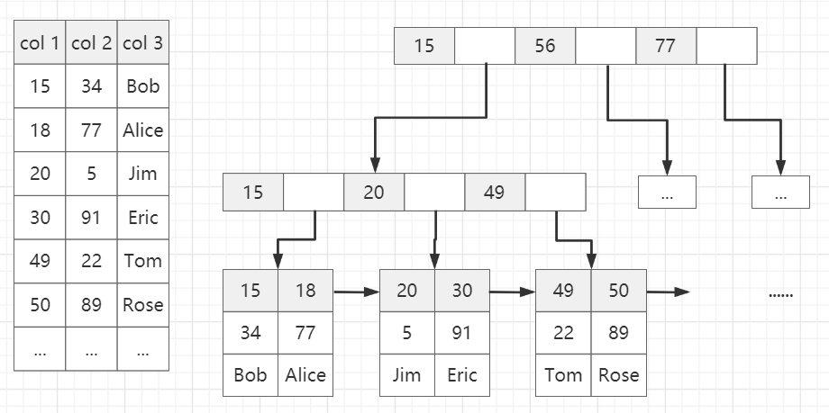
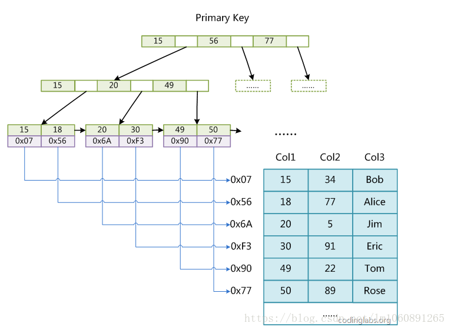
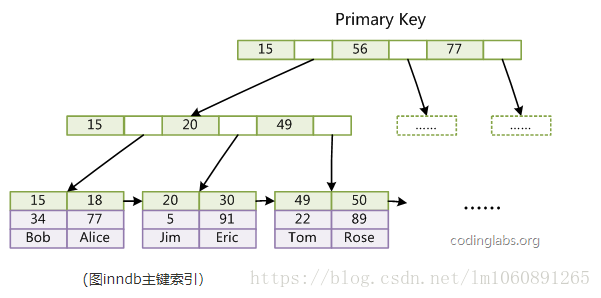
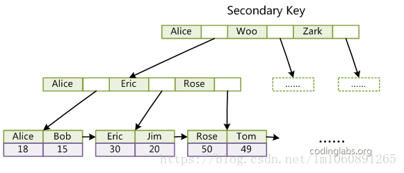

参考文章链接：https://www.cnblogs.com/jiawen010/p/11805241.html
索引结构
MySQL 底层采用 B+ 树结构实现数据索引；MySql 索引数据结构对经典的B+Tree 进行了优化。在原 B+Tree 的基础上，增加一个指向相邻叶子节点的链表指针，就形成了带有顺序指针的 B+Tree，提高区间访问的性能
如下图所示：

聚簇索引 & 辅助索引（非聚簇索引）
描述：
聚簇索引：
聚簇索引就是按照每张表的主键构造一颗B+树，同时叶子节点中存放的就是整张表的行记录数据，也将聚集索引的叶子节点称为数据页。这个特性决定了索引组织表中数据也是索引的一部分，每张表只能拥有一个聚簇索引
Innodb通过主键聚集数据，如果没有定义主键，innodb会选择非空的唯一索引代替。如果没有这样的索引，innodb会隐式的定义一个主键来作为聚簇索引
辅助索引：
在聚簇索引之上创建的索引称之为辅助索引，辅助索引访问数据总是需要二次查找。辅助索引叶子节点存储的不再是行的物理位置，而是主键值。通过辅助索引首先找到的是主键值，再通过主键值找到数据行的数据页，再通过数据页中的Page Directory找到数据行
Innodb辅助索引的叶子节点并不包含行记录的全部数据，叶子节点除了包含键值外，还包含了相应行数据的聚簇索引键（主键）
辅助索引的存在不影响数据在聚簇索引中的组织，所以一张表可以有多个辅助索引。在innodb中有时也称辅助索引为二级索引
聚簇索引的优缺点：
优点：
- 数据访问更快，因为聚簇索引将索引和数据保存在同一个B+树中，因此从聚簇索引中获取数据比非聚簇索引更快
- 聚簇索引对于主键的排序查找和范围查找速度非常快
缺点：
- 插入速度严重依赖于插入顺序，按照主键的顺序插入是最快的方式，否则将会出现页分裂，严重影响性能。因此，对于InnoDB表，我们一般都会定义一个自增的ID列为主键
- 更新主键的代价很高，因为将会导致被更新的行移动。因此，对于InnoDB表，我们一般定义主键为不可更新
- 二级索引访问需要两次索引查找，第一次找到主键值，第二次根据主键值找到行数据
聚簇索引和非聚簇索引的区别
- 聚簇索引的叶子节点存放的是主键值和数据行，支持覆盖索引；二级索引的叶子节点存放的是主键值或指向数据行的指针
- 由于节子节点(数据页)只能按照一颗B+树排序，故一张表只能有一个聚簇索引。辅助索引的存在不影响聚簇索引中数据的组织，所以一张表可以有多个辅助索引
MyISAM 索引实现
MyISAM 索引文件和数据文件是分离的，索引文件仅保存数据记录的地址
主键索引（非聚簇索引）
MyISAM引擎使用B+Tree作为索引结构，叶节点的data域存放的是数据记录的地址。
下图是MyISAM主键索引的原理图：

这里设表一共有三列，假设我们以Col1为主键，图myisam1是一个MyISAM表的主索引（Primary key）示意。可以看出MyISAM的索引文件仅仅保存数据记录的地址
辅助索引
在MyISAM中，主索引和辅助索引（Secondary key）在结构上没有任何区别，只是主索引要求key是唯一的，而辅助索引的key可以重复。
如果我们在Col2上建立一个辅助索引，则此索引的结构如下图所示：

同样也是一颗B+Tree，data域保存数据记录的地址。因此，MyISAM中索引检索的算法为首先按照B+Tree搜索算法搜索索引，如果指定的Key存在，则取出其data域的值，然后以data域的值为地址，读取相应数据记录
MyISM使用的是非聚簇索引，非聚簇索引的两棵B+树看上去没什么不同，节点的结构完全一致只是存储的内容不同而已，主键索引B+树的节点存储了主键，辅助键索引B+树存储了辅助键。表数据存储在独立的地方，这两颗B+树的叶子节点都使用一个地址指向真正的表数据，对于表数据来说，这两个键没有任何差别。由于索引树是独立的，通过辅助键检索无需访问主键的索引树
InnoDB 索引实现
InnoDB也使用B+Tree作为索引结构，但具体实现方式却与MyISAM截然不同
主键索引（聚簇索引）
MyISAM索引文件和数据文件是分离的，索引文件仅保存数据记录的地址。而在InnoDB中，表数据文件本身就是按B+Tree组织的一个索引结构，这棵树的叶节点data域保存了完整的数据记录。这个索引的key是数据表的主键，因此InnoDB表数据文件本身就是主索引

(图inndb主键索引）是InnoDB主索引（同时也是数据文件）的示意图，可以看到叶节点包含了完整的数据记录。这种索引叫做聚集索引。因为InnoDB的数据文件本身要按主键聚集，所以InnoDB要求表必须有主键（MyISAM可以没有），如果没有显式指定，则MySQL系统会自动选择一个可以唯一标识数据记录的列作为主键，如果不存在这种列，则MySQL自动为InnoDB表生成一个隐含字段作为主键，这个字段长度为6个字节，类型为长整形
InnoDB 的辅助索引
InnoDB的所有辅助索引都引用主键作为data域。
例如，下图为定义在Col3上的一个辅助索引：

聚集索引这种实现方式使得按主键的搜索十分高效，但是辅助索引搜索需要检索两遍索引：首先检索辅助索引获得主键，然后用主键到主索引中检索获得记录
为什么不建议使用过长的字段作为主键，因为所有辅助索引都引用主索引，过长的主索引会令辅助索引变得过大
下面部分参考文章链接：https://blog.csdn.net/bible_reader/article/details/100008009
注意点
- 数据文件本身就是索引文件
- 表数据文件本身就是按B+Tree组织的一个索引结构文件
- 聚集索引中叶节点包含了完整的数据记录
- InnoDB表必须要有主键，并且推荐使用整型自增主键
为什么推荐使用整型自增主键而不是选择UUID？
- UUID是字符串，比整型消耗更多的存储空间
- 在B+树中进行查找时需要跟经过的节点值比较大小，整型数据的比较运算比字符串更快速
- 自增的整型索引在磁盘中会连续存储，在读取一页数据时也是连续；UUID是随机产生的，读取的上下两行数据存储是分散的，不适合执行where id > 5 && id < 20的条件查询语句
- 在插入或删除数据时，整型自增主键会在叶子结点的末尾建立新的叶子节点，不会破坏左侧子树的结构；UUID主键很容易出现这样的情况，B+树为了维持自身的特性，有可能会进行结构的重构，消耗更多的时间
为什么非主键索引结构叶子节点存储的是主键值？
保证数据一致性和节省存储空间
在Innodb下主键索引是聚集索引，在Myisam下主键索引是非聚集索引
MyISAM 和 InnoDB 的区别
myisam 引擎是5.1版本之前的默认引擎，支持全文检索、压缩、空间函数等，但是不支持事务和行级锁，所以一般用于有大量查询少量插入的场景来使用，而且 myisam 不支持外键，并且索引和数据是分开存储的
innodb 是基于聚簇索引建立的，和 myisam 相反它支持事务、外键，并且通过 MVCC 来支持高并发，索引和数据存储在一起